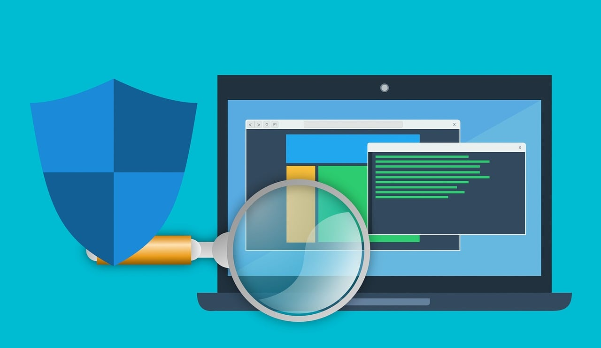

Kaspersky Endpoint Security for Business

Kaspersky Endpoint Security for Business bietet umfassenden Schutz vor vielfältigen Bedrohungen wie Viren, Malware, Ransomware und mehr. Es schützt sowohl einzelne Endgeräte als auch das gesamte Netzwerk vor Cyberangriffen und sorgt für eine sichere Arbeitsumgebung.
Vulnerability Scans
Vulnerability Scans sind eine wichtige Maßnahme, um potenzielle Schwachstellen in Ihrem IT-System zu erkennen. Durch regelmäßige Scans können Sicherheitslücken identifiziert und behoben werden, um die Angriffsfläche für Hacker zu reduzieren und Ihre Daten zu schützen.
Windows Hardening

Windows Hardening bezeichnet das gezielte Absichern von Windows-Betriebssystemen, um unbefugte Zugriffe und unautorisierte Manipulationen zu verhindern. Durch die Anwendung von Best Practices und Sicherheitsrichtlinien wird die Sicherheit Ihrer Windows-Umgebung verbessert.
Kaspersky Security for Microsoft Office 365

Kaspersky Security for Microsoft Office 365 erweitert den Schutz Ihrer Office 365 Umgebung. Es bietet zusätzliche Sicherheitsebenen gegen Bedrohungen in E-Mails, Anhängen und Links, um Ihre Geschäftskommunikation vor Malware und Phishing-Angriffen zu schützen.